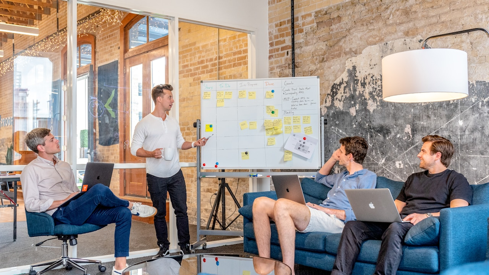

Emailing & automation au Maroc : définition pour décideurs
En résumé : Emailing & Automation au Maroc : comparatif décisionnel + guide ROI pour optimiser votre budget est une démarche stratégique clé dans le domaine du Emailing & Automation. Elle permet aux entreprises au Maroc d’optimiser durablement leurs performances digitales, d’augmenter leur visibilité et de maximiser le retour sur investissement (ROI) de leurs campagnes.
L’emailing & l’automation consistent à envoyer des messages marketing (newsletters et campagnes) et à déclencher automatiquement des séquences basées sur le comportement (inscription, visite, achat, inactivité). L’objectif est d’augmenter la conversion, la rétention et le revenu par destinataire via la segmentation, la délivrabilité, le suivi KPI et l’attribution budgétaire.
Pourquoi les dirigeants au Maroc doivent reconsidérer l’emailing (au-delà de “faire une campagne”)
Dans beaucoup d’entreprises au Maroc — PME en croissance comme groupes plus structurés — l’emailing est encore géré comme une activité ponctuelle. Une newsletter “quand on a le contenu”, une relance “au feeling”, parfois une liste alimentée en interne mais jamais assainie. Or l’enjeu actuel est financier : réduire le coût d’acquisition global, lisser le cycle de vente et augmenter la marge nette via un canal pilotable.
À Casablanca, Rabat ou Tanger, la concurrence digitale pousse les budgets à la hausse (Google Ads, social ads, retargeting). Sans automation, votre “top of funnel” dépend trop d’achats médias et retombe quand la dépense ralentit. En revanche, une stratégie d’emailing & automation bien construite transforme vos signaux (clics, pages vues, formulaires, achats, paniers) en actions rentables : relances opportunes, nurturing qualifiant, réactivation des leads et upsell post-achat.
Comparatif décisionnel : emailing “manuel” vs automation (et où placer votre budget)
Pour arbitrer, il faut raisonner par cas d’usage. Voici un comparatif clair, orienté ROI, pour décider rapidement.
1) Emailing manuel (campagnes) : utile pour quoi?
- Idéal : annonces produit, promotions temporaires, contenu éditorial planifié.
- Forces : flexibilité créative, rapidité de mise en ligne.
- Limites : dépendance à la fréquence, faible réactivité comportementale, conversion plus irrégulière.
Quand investir? Lorsque votre base est déjà qualitative, que votre segmentation est simple (ex : prospects vs clients) et que votre cycle de vente est court (ex : e-commerce, services à décision rapide).
2) Automation : utile pour quoi?
- Idéal : déclenchements (welcome, relance formulaire, panier, visite, post-achat, réactivation).
- Forces : cohérence 24/7, amélioration progressive via données, conversion mieux alignée à l’intention.
- Limites : nécessite une hygiène CRM, des règles, une attribution cohérente, et un minimum de créativité structurée.
Quand investir? Quand vous avez un volume suffisant de leads ou de visiteurs, un taux d’abandon à récupérer, et un besoin de réduire la dépendance aux campagnes “one-shot”.
3) La combinaison gagnante (et la logique financière)
Le bon modèle n’est pas “automation uniquement” ou “newsletter uniquement”. L’approche rentable consiste généralement à : (1) utiliser l’emailing manuel pour créer de la demande et installer la marque, (2) utiliser l’automation pour convertir et récupérer l’intention, (3) utiliser un système d’attribution pour prouver l’impact au CFO et au DG.
Indicateur dirigeant : votre email devrait générer un revenu attribué et traçable. Si vous ne pouvez pas relier vos envois à des métriques d’affaires (leads, opportunités, CA, marge), vous pilotez au feeling. C’est le piège le plus cher.
Guide d’optimisation budgétaire : comment arbitrer sans se tromper
Un budget emailing & automation se compose généralement de quatre blocs : 1) outils & délivrabilité, 2) création contenu / design (templates, landing, assets), 3) intégrations CRM (tracking, synchronisation), 4) production & optimisation (A/B tests, segmentation, monitoring KPI).
Étape 1 : fixez un objectif de revenu par destinataire
Le KPI dirigeant à regarder n’est pas uniquement le taux d’ouverture. C’est le Revenue Per Recipient (RPR) ou, à défaut, le CA attribué / nombre de destinataires actifs.
Exemple (raisonnement) : - Base active : 50 000 contacts. - CA attribué email/automation (sur fenêtre d’attribution) : 250 000 MAD. - RPR = 250 000 / 50 000 = 5 MAD par destinataire. Ensuite, vous pouvez fixer un objectif : +20% RPR en optimisant segmentation + automations de conversion. C’est mesurable, défendable et actionnable.
Étape 2 : calculez le coût complet et la marge attendue
Pour éviter l’illusion d’un canal “gratuit”, calculez un coût complet mensuel :
- Outils (plateforme emailing/automation, add-ons, deliverability).
- Production (templates, copywriting, design, conformité).
- Intégrations (CRM, tracking, data pipelines).
- Temps équipe (pilotage + QA).
Supposons un investissement de 18 000–28 000 MAD/mois (ordre de grandeur courant selon complexité et volume). Si l’email/automation génère un CA additionnel de 90 000–160 000 MAD/mois avec une marge nette moyenne (par exemple) de 20% à 35%, l’impact peut devenir immédiat. La clé : attribution + automatisations qui récupèrent des ventes réelles (panier, lead qualifié, réactivation).
Étape 3 : remplacez les “KPI vanité” par un tableau de bord CFO-friendly
Voici les KPIs qui comptent vraiment :
- Délivrabilité : taux de rebond, spam complaints, réputation domaine.
- Qualité : croissance de la liste organique, taux de désabonnement, taux d’engagement par cohorte.
- Conversion : taux de clic vers CTA, conversion lead → MQL/SQL, conversion visite → lead, conversion panier → achat.
- Monétisation : CA attribué, marge attribuée, RPR, coût par lead qualifié.
- Récurrence : réachat, réactivation, LTV influencée par séquences.
Automations recommandées : le plan de bataille par maturité (Maroc + international)
À Casablanca et Rabat, on observe souvent deux profils : - des entreprises “com” : elles envoient des newsletters mais n’optimisent pas le comportement, - des entreprises “commerce” : elles ont des données d’achat mais n’installent pas de parcours cohérents. À Tanger et Marrakech, certaines PME manquent de process et ont des cycles de vente hétérogènes (B2B services, franchises, formation, immobilier, santé, retail).
Pack 1 (fondations) : à mettre en place dès maintenant
- Tracking & hygiène data : formulaires, événements (view content, add to cart), dédoublonnage CRM.
- Welcome series : 3 à 5 emails selon source (site, salon, campagne), avec offres d’entrée pertinentes.
- Lead magnet → nurturing : 4 à 8 emails, progressifs en valeur, avec CTA orienté qualification.
- Réactivation : séquences “inactifs 60/90 jours” avec offres adaptées (contenu, réduction, reprise contact).
Pack 2 (conversion) : là où le ROI s’accélère
- Abandon panier / intention e-commerce : rappeler, rassurer (preuve sociale, FAQ), puis relancer avec un incitatif maîtrisé.
- Relance formulaire non finalisé : récupérer l’intention (ex : demande de devis, rendez-vous).
- Post-achat : onboarding, cross-sell, demande de feedback, anniversaire produit.
Pack 3 (scalabilité & pilotage fin)
- Segmentation par comportement : pages vues, catégories, niveau d’engagement.
- Personnalisation par données : entreprise, secteur, taille, localisation (utile au Maroc pour offres territoriales).
- Orchestration multi-événements : éviter la cannibalisation (si un client reçoit déjà une promo, on ajuste la séquence suivante).
Le point crucial : chaque automation doit avoir une hypothèse business (ex : “récupérer X% de paniers abandonnés” ou “augmenter de Y% la part de leads MQL”). Sinon, on mesure juste des ouvertures.

ROI concret : modèles de calcul pour dirigeants (MAD & EUR)
Voici une façon simple de calculer votre ROI emailing/automation sans jargon.
Modèle A : récupération de leads (B2B)
Supposons : - budget mensuel : 20 000 MAD - nombre de leads entrants : 2 000 - objectif : augmenter la conversion lead → opportunité de 6% à 7,5% (soit +1,5 point) Si une opportunité vaut en moyenne 12 000 MAD de CA brut et que la probabilité de closing est de 20%, alors : - leads additionnels = 2 000 × 1,5% = 30 opportunités “additionnelles” - CA attendu = 30 × 12 000 × 20% = 72 000 MAD - ROI = (72 000 - 20 000) / 20 000 = 260%
Ce modèle devient plausible quand l’automation corrige les “moments de chute” (non-réponse, délai de contact, manque de séquence nurture) et quand la qualification est reliée au CRM.
Modèle B : e-commerce (panier + réachat)
Supposons : - budget : 25 000 MAD - visiteurs/mois : 40 000 - taux add to cart : 6% = 2 400 paniers - taux de récupération via automation : 8% (au lieu de 4%) Paniers récupérés additionnels : 2 400 × (8% - 4%) = 96 ventes - marge moyenne par commande : 120 MAD - marge additionnelle = 96 × 120 = 11 520 MAD - ROI = (11 520 - 25 000) / 25 000 = -54% (pas bon)
Comment rendre le modèle rentable? En combinant panier + réassurance + relance + timing + post-achat. Si vous ajoutez 30% de ventes via réactivation et cross-sell, et si la marge est plus proche de 250 MAD, le calcul bascule rapidement. C’est précisément là que l’approche DatRey fait la différence : design de séquences + structure d’offres + tracking d’attribution + itérations orientées KPI.
Modèle C : comparaison en EUR (international)
Pour des filiales ou opérations hors Maroc, raisonnez aussi en euros : si vous investissez 1 500–3 000 EUR/mois et que vous générez 6 000–12 000 EUR de CA additionnel attribué, vous pouvez viser un ROI de 100%+ selon la marge. Le principe reste le même : l’automation convertit mieux, mais uniquement si le tracking et la segmentation sont propres.
Les erreurs qui détruisent votre ROI (et comment les éviter)
- Listes “pleines” mais sales : rebonds + spam = délivrabilité en chute. Résultat : même vos meilleurs emails n’atteignent plus la boîte de réception.
- Segmentation inexistante : un seul message pour tous. Vous augmentez le désabonnement et vous baissez la conversion.
- Automation sans logique de suppression : un client reçoit encore une relance “devis” après achat.
- Attribution floue : impossible de prouver l’impact. Les CFO coupent le budget à la première pression.
- A/B tests trop “cosmétiques” : tester une couleur de bouton sans revoir l’offre et l’audience ne change pas la marge.
Comment DatRey structure un projet Emailing & Automation rentable
DatRey ne vend pas “des emails”. L’agence conçoit un système complet, pensé pour l’acquisition et la croissance rentable. On démarre par un diagnostic opérationnel :
- Audit de la délivrabilité : domaines, réputation, erreurs tracking, conformité.
- Audit CRM & segmentation : sources, qualité contacts, règles de qualification.
- Audit parcours : analyse de vos moments de chute (inscription, attente, abandon).
- Audit attribution : fenêtre d’attribution, événements, mapping des conversions.
Puis, on propose un plan d’optimisation budgétaire : - quelles automations lancer en priorité, - quel mix manuel/automation garder, - comment réduire le gaspillage (réduire désabonnements, corriger délivrabilité, éviter la cannibalisation), - et comment mesurer l’impact en MAD/EUR avec un tableau de bord KPI.
Plan d’action 30 jours (simple, orienté résultats)
- Semaine 1 : collecte des données, audit tracking, hygiène contacts, check délivrabilité.
- Semaine 2 : création/optimisation des 2–3 premières automations à plus fort levier (welcome + lead nurturing + réactivation).
- Semaine 3 : mise en place des règles de segmentation, suppression logique, événements conversion.
- Semaine 4 : optimisation based on data (CTA, rythme, cohérence offre), dashboard ROI.
FAQ décisionnelle
Combien de temps pour voir un ROI?
En pratique, des gains sur conversion peuvent être observés sur les premières séquences (welcome/nurturing) dès les semaines suivant le déploiement, avec une lecture ROI plus solide une fois les cohortes stabilisées et l’attribution fiable en place.
Quel budget minimum faut-il?
Il dépend du volume de contacts, de la qualité de vos données et de l’intégration CRM. DatRey vous aide à dimensionner un budget “intelligent” : investir dans les automatisations à fort levier plutôt que d’étaler sur trop de scénarios.
Notre entreprise est une PME : est-ce pertinent?
Oui. Les PME gagnent souvent plus vite car l’automation corrige immédiatement les pertes (relances, délais, réactivation) et augmente la valeur de chaque contact. Le ROI arrive quand la segmentation et le tracking ne sont pas négligés.
Conclusion : votre emailing doit rapporter, pas seulement “communiquer”
Au Maroc comme à l’international, l’emailing & l’automation rentables sont une discipline : données propres, segmentation cohérente, délivrabilité stable, automations orientées intention, et attribution défendable face aux objectifs financiers. Si votre budget n’est pas relié à des résultats mesurables, vous financez un risque.
Prochaine étape : demandez votre Audit Digital Gratuit avec DatRey. On analysera vos parcours et votre ROI potentiel, puis on vous proposera un plan d’optimisation budgétaire clair : quoi arrêter, quoi lancer, et comment augmenter vos leads et revenus de façon rentable.